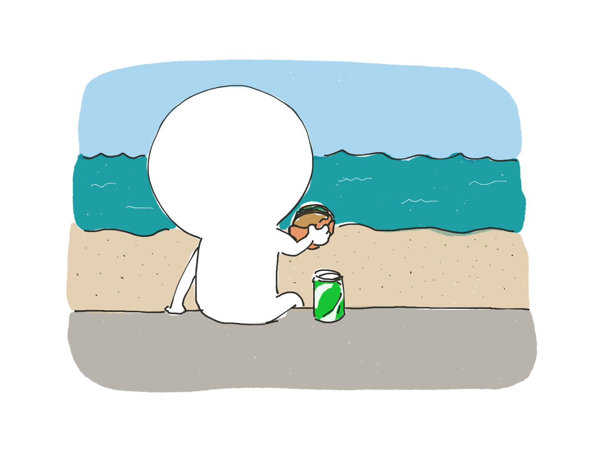
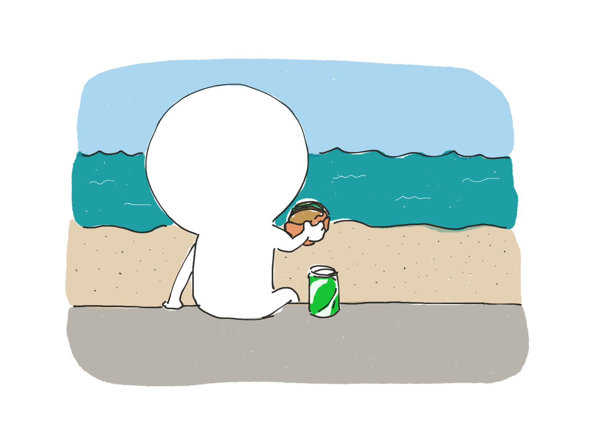

신종 코로나바이러스 감염증(코로나19)도 진정되는 날이 올 것이다. 종식될 수도 있다. 하지만 우리의 삶이 코로나19 이전으로 돌아갈 수 있을지는 모르겠다. 코로나19 사태로 건축가들은 우리가 사는 건물에 대해 다시 생각하고 있다.
미래의 모습은 어떨까? 밑으로 스크롤 해보자.


 



제임스를 소개한다
제주 바닷가에 사는 개발자인 제임스는 코로나19 이전부터 재택근무를 해왔지만, 코로나19는 제임스의 생활에도 변화를 주었다.
아침에 일어나면, 커피를 내리며 정신을 차린다.
사회적 거리두기를 위해 한적한 바닷길쪽으로 러닝을 한다.
가끔 만나는 바닷새와 눈인사를 나눈다.
맞다, 트위터의 걔.
운동을 마치고 집에 돌아와 작업을 시작한다.
밥은 집에서 먹거나, 테이크아웃이 가능한 메뉴를 골라 탁 트인 야외에서 먹는다. 물론 사회적 거리두기를 하기 위함이다.
보통 오후 작업은 집 근처의 일하기 좋은 카페에서 해왔지만, 코로나19 이후에는 집에서 하는 날이 많아졌다.
라면 매니아 답게 유튜브로 라면소녀 채널을 보며 간식으로 라면을 먹는다.
자기 전, 가끔 요가소년 채널을 보며 요가를 한다.
일과를 마치고 폰질을 한다 잠자리에 든다.
레일라는 코로나19 사태 이후 발생한 많은 변화에 비교적 빠르게 적응했다. 인간과 달리 건축은 변화에 천천히 반응한다. 일반적으로 건물을 설계하고 재정을 확보하고 건설하는 데 5년이 걸리기 때문이다.
많은 사람은 집을 옮길 여유가 없거나 집을 개선하는 데 큰 돈을 쓰기 어렵다. 불경기에 직면한 만큼, 많은 고용주는 회사를 이전하거나 재편성할 여유가 없을 것이다.
만약 백신이 빨리 개발돼 코로나19가 앞으로 몇 달 안에 종식된다면, 우리의 일상이 ‘정상'으로 돌아갈 수 있을지도 모르겠다.
하지만 레일라의 가상 일상의 일부는 우리의 현실이 될 수도 있다. 코로나19가 계속 확산하고 백신 개발이 더뎌진다면 말이다.
많은 건축가들은 원격근무 문화가 자리 잡는 것이 코로나19 사태가 가져온 가장 큰 건축적 변화라고 말한다.
왜? 돈 때문이다.
미국 뉴욕시에서 공공 건축을 담당했던 데이빗 버니 교수는 기업들이 집에서 일하는 직원 수를 늘림으로써 사무실 공간 사용과 이에 대한 지출을 줄일 수 있다고 분석했다.
그는 "사무공간 수요가 줄고 있다"며"이 부분에 있어 부동산 업계가 이미 혼란에 빠진 모습을 보이고 있다"고 말했다.

영국 왕립건축가협회(Riba)의 휴 피어만 박사는 "기존의 많은 오피스 건물이 시장성을 잃는 것을 보게 될 것"이라고 내다봤다.
그는 "큰 규모의 사무 공간들, 특히 고층 건물에 위치한 사무실은 다른 공간으로 재탄생시키기 어렵다"고 설명했다.
"벌써 이런 공간들은 매력을 잃고 있습니다. 도시를 떠나야 한다는 압박 또한 생길 것입니다."
피어만 박사는 사람들의 건강 우려가 과거에도 주요 건축 발전을 이끌었다고 말했다.
질병과 대기 질 저하에 대한 우려는 19세기와 20세기 초반에 인구 이동을 촉발했고, 교외 지역의 성장은 이에 대한 직접적인 결과였다.

미국 설계 회사인 에이컴(AECOM) 소속 건축가이자 혁신 담당 이사인 데일 싱클레어는 "회사에서 노트북 타자를 열심히 치는 시대는 지났다"며 "그건 집에서도 할 수 있는 일"이라고 말했다.
그는 "설레는 부분은 앞으로 사무실에 가는 목적은 동료들과 함께 아이디어를 창출하며 협업하기 위함이 될 것"이라고 분석했다.
싱클레어는 앞으로 사무실에서 더 많은 부분이 자동화되리라 예측했다. 본격적으로 데이터를 기반으로 한 기술을 활용한 언택트 시대가 온다는 것이다.
"건물 자체도 엄청난 기술력을 갖게 될 것입니다. 사람들은 개인 휴대폰을 이용해 건물의 기능을 활용하고, 음성 인식이나 얼굴 인식도 흔히 쓰이겠죠. 다양한 로봇이 우리를 돕고, 데이터도 더 많이 수집할 것입니다."
그는 코로나19가 이 같은 현상을 가속화하고 있다고 말한다.
특히 병원에서는 일부 병원균을 차단하기 위해 온도와 습도를 조절하는 데 고정식 및 웨어러블 센서가 등장할 것이다.
일부는 이미 박테리아와 일부 바이러스를 박멸하기 위해 자외선 필터를 탑재한 중앙 냉방 시스템을 도입하기 시작했다.